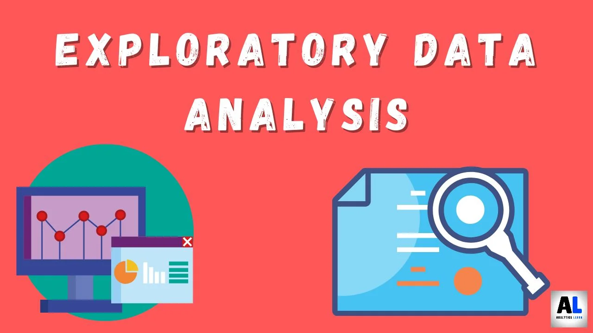
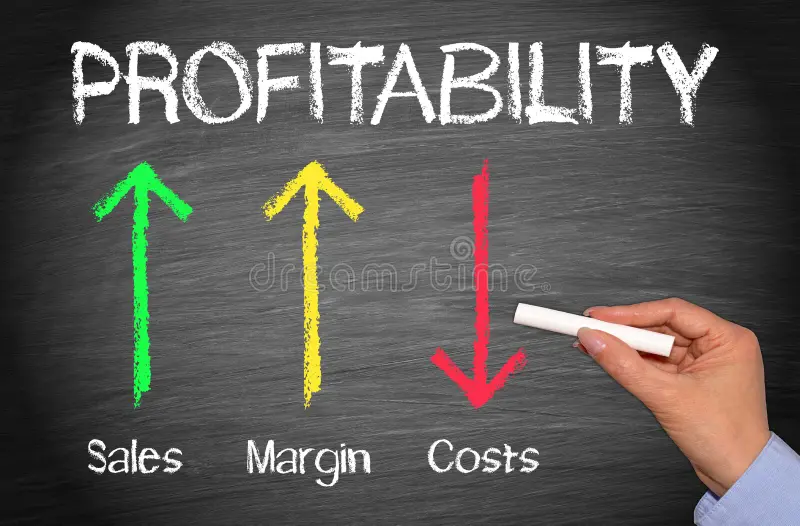

In this project, we took a layoff dataset and transformed it in MySQL to enhance its usability for analysis.
This involved cleaning the data by removing duplicates, standardizing formats, and handling missing values
to ensure accuracy and consistency.

In this project, we explore and analyze a layoff dataset using MySQL to uncover insights and trends.
We perform data aggregation,summary statistics, and time-series analysis to transform the dataset
into a more actionable format for further analysis.

In this project, we analyze global energy consumption data using Tableau to visualize trends and key
performance indicators. Interactive dashboards are created to provide actionable insights and
comparisons across different regions and energy sources.


In this project, we highlight key sales metrics and trends and the table features interactive visualizations
that allow for detailed analysis of sales performance across various dimensions and time periods.

In this project, we analyze profitability through the lens of discounts. Interactive dashboards reveal the
impact of discount strategies and thresholds on profitability, providing insights for optimizing pricing
and maximizing profit margins.